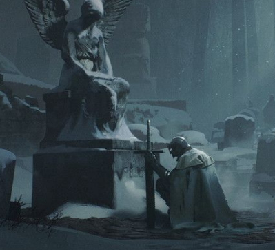

ㅤ
Прочие Разделы.
Прочие Разделы.

— История Участников
Какие качества отличают истинно сильного человека? Кто способен переломить исход самого безнадежного сражения? Чем именно выделяется такая личность? Как ей удаётся достичь невероятных результатов? Какой путь она прошла, каковы её мысли и поступки, как начиналась игра и каким итогом завершилась? Поскольку виртуальные миры позволяют раскрыть самые яркие грани фантазии, предлагаем познакомиться с уникальными персонажами нашего сервера — теми, чьи приключения удивляют, восхищают и вдохновляют.
— Читать

― Рассказы, Истории и Книги
Этот раздел посвящён творчеству наших игроков. Здесь собраны разнообразные литературные произведения, созданные ими в процессе увлекательной игровой деятельности. Это могут быть интересные истории, красочные описания приключений персонажей, повествования о судьбах целых народов и государств, размышления о мифологии игрового мира и многое другое. Приглашаем вас ознакомиться с коллекцией рассказов, историй и заметок, созданных нашими игроками, ведь каждая из них хранит частичку души своего автора и открывает двери в особый мир творчества.
— Читать

― Что если?
События складываются настолько неожиданно, что финал истории оказывается совсем не таким, каким его ожидали увидеть. Судьба может повернуться лицом или спиной, сделав развязку либо радостной, либо трагичной. Однако представьте себе возможность вернуться назад и сделать иной выбор — тот самый ключевой поворот, способный переписать весь сюжет заново. Именно такие моменты случались неоднократно в ВПИ. Иногда решения одного игрока оказывали огромное влияние на развитие всей игры, меняли течение политических интриг и судьбу целых цивилизаций.
— Читать

― Медали
Наиболее активные и успешные участники регулярно отмечаются специальными наградами, подчеркивающими значимость их достижений и вклад в игру. Награды представлены разнообразными медалями, каждая из которых символизирует определённые свершения и заслуги. Многие медали уже ушли в прошлое, уступив место новым, соответствующим современным реалиям игры. Тем не менее, старые награды сохраняют историческое значение и остаются частью культурного наследия ВПИ. Каждый участник имеет уникальную возможность заглянуть в архив и лично все посмотреть.
— Читать
ㅤ